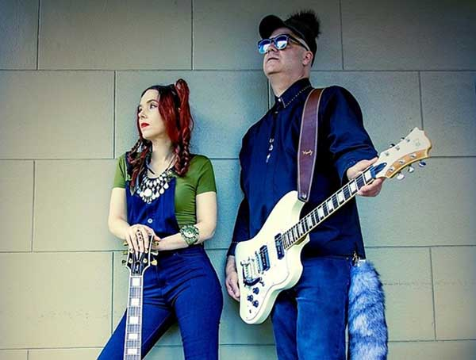
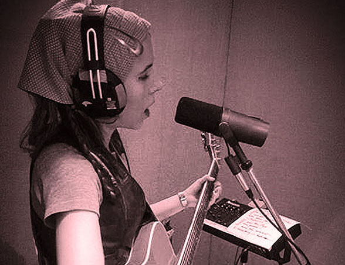
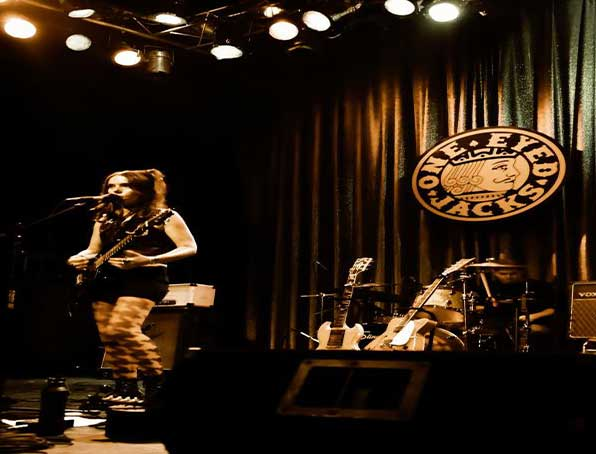

Get to know the band
Meet the Band

Check out the music
Music

About the band
BioForged in the storied Wicker Park section of Chicago by vocalist Juliette Tworsey and guitarist Jules Shapiro, FireBug began cutting their musical teeth in and around local hotspots in Chicago and Los Angeles before finally moving to New Orleans.
FireBug have become a part of the essential club scene sharing the stage with many artists including Tom Morello (Rage Against The Machine), Abby Travis (BECK/Eagles Of Death Metal), Dave Catching (Queens Of The Stone Age/Eagles Of Death Metal) unplugged sets at the Hotel Café with new folk artist Jesca Hoop (Tom Waits), and even performing acoustic with classic 60’s folk icon Donovan.
The band has also received high praise from various publications such as HITS Magazine, Time Out NY and LA Weekly, who compare the FireBug sound to that of a new millennium version of 70’s rock, with each song being stamped with their own unique signature.
Their expertly woven hard rock/indie/blues sound with a bit of Irish/British influence is brought home by the sweet, slightly psychedelic, but intense vocals of Juliette Tworsey.
Taken independently, there are songs in the band’s repertoire which could be classified as indie, blues, and even psychedelic. In the final analysis, FireBug are out to establish a new game, and people want to hear what all the noise is about. In so doing, FireBug have performed at CMJ in New York City, and were showcased at NorthByNortheast in Toronto, and recently at SXSW 2013 in Austin the largest music conference in North America.
FireBug have toured the UK three times, with a recent memorable performance in Knebworth at the sold out 2010 Sonisphere Festival with Iron Maiden, Iggy and the Stooges, Alice In Chains, The Cult, Good Charlotte, Papa Roach and many other large acts. In London, FireBug has performed in famous venues such as Dublin Castle, The Halfmoon and The Rhythm Factory. They were voted best DIY songwriters and Winner of the UK New Music Video Awards, and have won Best International Act two years in a row (2009 & 2010) at the UK Exposure Music Awards (sponsored by ToursDates.co.uk).
FireBug also has performed many shows in New Orleans including 2010 Satchmo Festival, and a benefit concert Stand Up for Haiti. The highly acclaimed NewOrleans.com and The Vinyl District did a spotlight on them performing in the French Quarter on Royal and St. Ann for the French Quarter Festival. FireBug recently performed in Downtown New Orleans for the New Orleans Downtown Arts & Music Festival in Lafayette Square and performed two showcases for the 2012 New Orleans Fringe Festival.. Other New Orleans venues include One Eyed Jacks, Howlin' Wolf, Siberia, Hi-Ho Lounge, House Of Blues and Circle Bar. On the band’s schedule are famous venues like the Viper Room in West Hollywood, California; The Echo in Los Angeles, One Eyed Jacks in New Orleans, and House of Blues.
Over the past few years, FireBug have hosted the quarterly, and much sought-after, FIRELIGHT! Music Festival located in Silver Lake, the heart of Los Angeles’ hot new music scene.
FireBug plans the European release of their critically-acclaimed album, “Season for Change” this year in Europe. and they are already working on their next album with a planned worldwide release in the near future.
FireBug recent endorsements include:
UK based Hiwatt Amplifiers- http://www.hiwatt.co.uk/artists